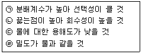
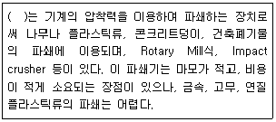

환경기능사 (2013-10-12 기출문제)
1과목: 대기오염방지
1. 대기층의 구조에 관한 설명으로 옳지 않은 것은?
- 오존농도와 고도분포는 지상으로부터 약 10Km 부근인 성층권에서 35ppm 정도의 최대농도를나타낸다.
- 대류권에서는 고도증가에 따라 기온이 감소한다.
- 열권은 지상 80Km 이상에 위치한다.
- 중간권 중 상부 80Km 부근은 지구대기층 중 가장 기온이 낮다.
(정답률: 72%)

2. 후드(hood)는 여러 가지 생산공정에서 발생되는 열이나 대기오염물질을 함유하는 공기를 포획하여 환기시키는 장치이다. 이러한 후드의 형식(종류)에 해당하지 않는 것은?
- 배기형 후드
- 포위형 후드
- 수형 후드
- 포집형 후드
(정답률: 63%)
3. 세정 집진장치의 특징으로 거리가 먼 것은?
- 고온의 가스를 처리할 수 있다.
- 폐수처리 장치가 필요하다.
- 점착성 및 조해성 먼지를 처리할 수 없다.
- 포집된 먼지의 재비산 염려가 거의 없다.
(정답률: 67%)
4. 흡수법을 사용하여 오염물질을 처리하고자 할 때 흡수액의 구비조건으로 옳지 않은 것은?
- 휘발성이 적을 것
- 점성이 클 것
- 부식성이 없을 것
- 용해도가 클 것
(정답률: 76%)
5. 대기의 상층은 안정되어 있고, 하층은 불안정하여 굴뚝에서 발생한 오염물질이 아래로 지표면에까지 확산되어 오염을 발생시킬 수 있는 연기의 형태는?
- fanning 형
- looping 형
- fumigation 형
- trapping 형
(정답률: 70%)
6. 전기집진장치에 관한 설명으로 가장 거리가 먼 것은?
- 대량의 가스 처리가 가능하다.
- 전압변동과 같은 조건변동에 쉽게 적응할 수 있다.
- 초기 설비비가 고가이다.
- 압력손실이 적어 소요동력이 적다.
(정답률: 76%)
7. 프로판(C3H8)가스 10Kg을 완전 연소 하는데 필요한 이론공기량(Sm3)은?
- 62.2Sm3
- 84.2Sm3
- 104.2Sm3
- 121.2Sm3
(정답률: 51%)
8. 건조한 대기의 조성을 부피농도가 높은 순서대로 올바르게 나열된 것은?
- 질소 > 산소 > 아르곤 > 이산화탄소
- 산소 > 질소 > 이산화탄소 > 아르곤
- 이산화탄소 > 산소 > 질소 > 아르곤
- 산소 > 이산화탄소 > 아르곤 > 질소
(정답률: 86%)
9. 굴뚝의 유효 높이와 관련된 인자에 관한 설명으로 옳지 않은 것은?
- 배기가스의 유속이 빠를수록 증가한다.
- 외기의 온도차가 작을수록 증가한다.
- 풍속이 적을수록 증가한다.
- 굴뚝의 통풍력이 클수록 증가한다.
(정답률: 53%)
10. 질소산화물을 촉매환원법으로 처리하는 방법에 관한 설명으로 옳지 않은 것은?
- 비선택적 환원제로는 메탄이 사용된다.
- 선택적 환원제로는 암모니아, 수소, 일산화탄소 등이 사용된다.
- 선택적 촉매 환원법의 촉매로는 백금, 산화알루미늄계, 산화철계, 산화티타늄게 등이 사용된다.
- 탄화수소, 수소, 일산화탄소는 산소가 공존하여도 선택적으로 질소산화물과 반응하며, 암모니아는 산소와 우선적으로 반응한다.
(정답률: 62%)
11. 중력 집진장치의 집진효율 향상조건으로 옳지 않은 것은?
- 침강실 내의 배기가스 기류는 균일해야 한다.
- 침강실 내의 처리가스 속도가 작을수록 미립자가 포집된다.
- 침강실의 높이가 높고, 길이가 짧을수록 집진효율이 높아진다.
- 침강실 입구폭이 클수록 유속이 느려지며, 미세한 입자가 포집된다.
(정답률: 77%)
12. 바람에 관여하는 힘과 거리가 먼 것은?
- 지균력
- 마찰력
- 전향력
- 기압경도력
(정답률: 70%)
13. 에탄(C2H6) 1Sm3를 완전연소시킬 때, 건조배출가소 중의 CO2max(%)는?
- 11.7%
- 13.2%
- 15.7%
- 18.7%
(정답률: 35%)
14. 벤츄리스크러버의 특징으로 옳지 않은 것은?
- 소형으로 대용량의 가스처리가 가능하다.
- 목부의 처리가스 속도는 보통 60~90m/s 정도이다.
- 압력손실은 300~800mmH2O 정도이다.
- 물방울 입경과 먼지의 입경비는 충돌 효율면에서 3:1 전후가 좋다.
(정답률: 58%)
15. 다음 중 연료의 연소과정에서 공기비가 너무 큰 경우 나타나는 현상으로 가장 적합한 것은?
- 배기가스에 의한 열손실이 커진다.
- 오염물의 농도가 커진다.
- 미연분에 의한 매연이 증가한다.
- 불완전 연소되어 연소효율이 저하한다.
(정답률: 60%)
2과목: 폐수처리
16. 경도(Har dness)에 관한 설명으로 거리가 먼 것은?
- Na+은 농도가 높을 때는 경도와 비슷한 작용을 하여 유사경도라 한다.
- 2가 이상의 양이온 금속의 양을 수산화칼슘으로 환산하여 ppm 단위로 표시한다.
- 센물 속의 금속이온들은 세제나 비누와 결합하여 세탁 효과를 떨어뜨린다.
- 경도 중 CO32-, HCO3- 등과 결합한 형태로 있으 때 이를 탄산경도라고 하고, 이 성분은 물을 끓일 때 침전게거되므로 일시경도라 한다.
(정답률: 67%)
17. 지하수의 수질특성에 관한 설명으로 옳지 않은 것은?
- 지하수는 국지적 환경조건의 영향을 크게 받기 쉽다.
- 지하수는 대기와의 접촉이 제한 또는 차단되어 있기 때문에 수질성분들이 대체로 환원 상태로 존재하는 경우가 많다.
- 지하수는 햇빛을 받을 수 없으므로 광합성 반응이 일어나지 않으며, 세균에 의한 유기물의 분해가 주된 생물작용이 되고 있다.
- 지하수의 연평균 수온 변화는 지표수에 비해 현저히 크고, 일반적으로 약 2℃ 이상이다.
(정답률: 71%)
18. 위플에 의한 하천의 자정과정을 오염원으로부터 하천유하거리에 따라 단계별로 옳게 구분한 것은?
- 분해지대 → 활발한 분해지대 → 회복지대 → 정수지대
- 분해지대 → 활발한 분해지대 → 정수지대 → 회복지대
- 활발한 분해지대 → 분해지대 → 회복지대 → 정수지대
- 활발한 분해지대 → 분해지대 → 정수지대 → 회복지대
(정답률: 73%)
19. 다음 중 부상법의 종류에 해당하지 않는 것은?
- 진공부상
- 산화부상
- 공기부상
- 용존공기부상
(정답률: 62%)
20. 0℃ 얼음과 0℃ 물 1L의 무게 차이는 몇 g 인가? (단, 물과 얼음의 밀도는 0℃에서 각각 0.9998g/cm3, 0.9167g/cm3이고, 기타 조건은 무시한다.)
- 49.2
- 62.9
- 70.3
- 83.1
(정답률: 46%)
21. C2H5OH 의 완전산화 시 THOD/TOC의 비는?
- 1.92
- 2.67
- 3.31
- 4
(정답률: 59%)
22. A공장폐수의 BOD5 값이 240mg/L이고, 탈산소계수(K)가 0.2/day이다. 최종 BOD 값은? (단, 상용대수 기준)
- 237mg/L
- 267mg/L
- 297mg/L
- 327mg/L
(정답률: 53%)
23. 상수 처리장에서 처리된 물을 일시 저류하는 정수지의 설치 기능과 이 시설을 지하에 설피하는 이유로 가장 거리가 먼 것은?
- 살균제(Cl2)와 충분한 시간동안 접촉시키기 위해 설치한다.
- 지상에 설치시 처리수에 미량의 영양염류가 존재하면 조류가 광합성을 하고 증식하여 수질이 악화될 수 있다.
- 살균제가 태양광과 접촉하면 분해하여 손실이 일어날 수 있다.
- 바람의 영향을 받지 않고 처리수 중의 고형물질과 유해 중금속을 침전제거 시킬 수 있다.
(정답률: 55%)
24. 다음 오염물질 함유폐수 중 알칼리 조건하에서 염소처리(산화)가 필요한 것은?
- 시안(CN)
- 알루미늄(Al)
- 6가 크롬(Cr+6)
- 아연(Zn)
(정답률: 58%)
25. 농황산의 비중이 1.84, 농도는 70(W/W/%) 정도라면 이 농화안의 물농도(mole/L)는? (단, 농황산의 분자량은 : 98)
- 10
- 13
- 15
- 16
(정답률: 47%)
26. 정수 시설에서 오존처리에 관한 설명으로 가장 거리가 먼 것은?
- 오존은 강력한 산화력이 있어 원수 중의 미량 유기물질의 성상을 변화시켜 탈색효과가 뛰어나다.
- 맛과 냄새 유발물질의 제거에 효과적이다.
- 소독 효과가 우수하면서도 소독 부산물을 적게 형성한다.
- 잔류성이 뛰어나 잔류 소독효과를 얻기 위해 염소를 추가로 주입할 필요가 없다.
(정답률: 73%)
27. 염소(Cl2)가스를 물에 흡수시켰을 때 살균력은 pH가 낮은 쪽이 유리하다고 한다. pH가 9 이상에서 물속에 많이 존재하는 것으로 옳은 것은?
- OCl- 보다 HOCl 이 많이 존재한다.
- HOCl 보다 OCl- 이 많이 존재한다.
- pH에 관계없이 항상 HOCl 이 많이 존재한다.
- NH3가 없는 물속에서는 NH2Cl2 이 많이 존재한다.
(정답률: 61%)
28. A도시에서 발생하는 2,000m3/day의 하수를 1차 침전지에서 침전속도가 2m/day보다 큰 입자들을 완전히 제거하기 위해 요구되는 1차 침전지의 표면적으로 가장 적합한 것은?
- 100m2 이상
- 500m2 이상
- 1000m2 이상
- 4000m2 이상
(정답률: 67%)
29. 다음 중 슬러지 팽화의 지표로서 가장 관계가 깊은 것은?
- 함수율
- SVI
- TSS
- NBDCOD
(정답률: 82%)
30. BOD 용적부하(kg/m3ㆍday)식에 관한 설명으로 옳은 것은?
- 유입폐수 BOD농도(mg/L)에 유입유량(m3/day)과 10-3을 곱한 값을 포기조 용적(m3)으로 나눈 값이다.
- 유출폐수 BOD농도(mg/L)에 유출유량(m3/day)과 10-3을 곱한 값을 포기조 용적(m3)으로 나눈 값이다.
- 유입폐수 BOD농도(mg/L)에 유입유량(m3/day)과 10-3을 곱한 값에 미생물(MLSS)용적(m3)을 곱한 값이다.
- 유출폐수 BOD농도(mg/L)에 유출유량(m3/day)과 10-3을 곱한 값에 미생물(MLSS)용적(m3)을 곱한 값이다.
(정답률: 56%)
31. 폐수처리에 있어서 활성탄은 주로 어떤 목적으로 사용되는가?
- 흡착
- 중화
- 침전
- 부유
(정답률: 78%)
32. 1mM의 수산화칼슘이 녹아 있는 수용액의 pH는 얼마인가? (단, 수산화칼슘은 완전해리 한다.)
- 2,7
- 4.5
- 9.5
- 11.3
(정답률: 44%)
33. 혐기성조-호기성조의 과정을 거치면서 질소제거는 고려되지 않지만 하ㆍ폐수 내의 유기물 산화와 생물학적으로 인(P)을 제거하는 공법으로 가장 적합한 것은?
- A/O 공법
- A2/O 공법
- UCTA 공법
- Bar denpho 공법
(정답률: 81%)
34. 하수처리장의 침사지 부피가 12m3이고 유입되는 유량이 60m3/hr이라면 체류시간은?
- 0.2min
- 12min
- 30min
- 60min
(정답률: 56%)
35. 다음 지구상에 존재하는 담수 중 가장 많은 부분을 차지해오는 형태는?
- 호소수
- 하천수
- 지하수
- 빙설 및 빙하
(정답률: 85%)
3과목: 폐기물처리
36. 혐기성 소화조 운영 중 소화가스 발생량 저하 원인으로 가장 거리가 먼 것은?
- 유기물의 과부하
- 소화조내 온도저하
- 소화조내의 pH 상승(8.5 이상)
- 과다한 유기산 생성
(정답률: 44%)
37. 폐기물의 물리화학적 처리방법 중 용매추출에 사용되는 용매의 선택기준이 옳은 것만으로 묶여진 것은?

- (ㄱ), (ㄴ)
- (ㄱ), (ㄷ)
- (ㄴ), (ㄷ)
- (ㄴ), (ㄹ)
(정답률: 61%)
38. 짐머만(Zimmerman)공법이라고도 불리며 액상 슬러지에 열과 압력을 작용시켜 용존산소에 의하여 화학적으로 슬러지내의 유기물을 산화시키는 방법은?
- 혐기성 소화
- 호기성 소화
- 습식 산화
- 화학적 안정화
(정답률: 74%)
39. 슬러지의 탈수성을 개량하기 위한 약품으로 적절하지 않은 것은?
- 명반
- 철염
- 염소
- 고분자 응집제
(정답률: 53%)
40. 쓰레기 전화연료(RDF)의 구비조건으로 거리가 먼 것은?
- 칼로리가 높을 것
- 함수율이 높을 것
- 재의 양이 적을 것
- 조성이 균일할 것
(정답률: 77%)
41. 다음 국제적협약 중 잔류성유기오염물질(POPs)을 국제적으로 규제하기 위해 채택된 협약은?
- 스톡홀름협약
- 런던협약
- 바젤협약
- 노테르담협약
(정답률: 61%)
42. 함수율이 20%인 폐기물을 건조시켜 함수율이 2.3%가 되도록 하려면 폐기물 1000Kg당 증발시켜야 할 수분의 양은? (단, 폐기물 비중은 1.0)
- 약 127Kg
- 약 158Kg
- 약 181Kg
- 약 192Kg
(정답률: 53%)
43. 각종 폐수처리 공정에서 발생되는 슬러지를 소화시키는 목적으로 거리가 먼 것은?
- 유기물을 분해시켜 안정화시킨다.
- 슬러지의 무게와 부피를 감소시킨다.
- 병원균을 죽이거나 통제 할 수 있다.
- 함수율을 높여 수송을 용이하게 할 수 있다.
(정답률: 59%)
44. 폐기물을 분쇄하여 세립화 및 균일화하는 것을 파쇄라 한다. 파쇄의 장점으로 가장 거리가 먼 것은?
- 조성을 균일하게 하여 정상 연소시 연소효율을 향상시킨다.
- 폐기물 입자의 표면적이 증가되어 미생물 작용이 촉진되어 매립 시 조기안정화를 꾀할 수 있다.
- 부피가 커져 운반비는 증가하나 고밀도 매립을 할 수 있으며, 토양으로의 산화 및 환원작용이 빨라진다.
- 조대 쓰레기에 의한 소각로의 손상을 방지할 수 있다.
(정답률: 65%)
45. 침출수를 혐기성 여상으로 처리하고자 한다. 유입유량이 1,000m3/day, BOD가 500mg/L, 처리효율이 90% 라면, 이 때 혐기성 여상에서 발생되는 메탄가스의 양은? (단, 1.5m3 가스/BOD kg, 가스 중 메탄 함량은 60% 이다.)
- 350m3/day
- 4⑤m3/day
- 510m3/day
- 550m3/day
(정답률: 46%)
46. 관거(Pipe-line)를 이용한 폐기물 수거방법에 관한 설명으로 가장 거리가 먼 것은?
- 폐기물 발생빈도가 높은 곳이 경제적이다.
- 가설 후에 경로변경이 곤란하다.
- 25Km 이상의 장거리 수송에 현실성이 있다.
- 큰 폐기물은 파쇄, 압축 등의 전처리를 해야 한다.
(정답률: 77%)
47. 다음은 파쇄기의 특성에 관한 설명이다. ( )안에 가장 적합한 것은?

- 전단파쇄기
- 압축파쇄기
- 충격파쇄기
- 컨베이어파쇄기
(정답률: 67%)
48. 다음 중 매립지 내 가스(LFG: Landfill Gas)에서 주로 발생되는 성분으로 가장 거리가 먼 것은?
- 메탄
- 질소
- 염소
- 탄산가스
(정답률: 61%)
49. A도시지역의 쓰레기 수거량은 1792500ton/년 이다. 이 쓰레기를 1363명이 수거한다면 수거능력(MHT)은? (단, 1일 작업시간은 8시간, 1년 작업일수는 310일이다.)
- 1.45
- 1.77
- 1.89
- 1.96
(정답률: 65%)
50. 쓰레기 수거노선을 설정할 때의 유의사항으로 갖아 거리가 먼 것은?
- 가능한 한 간선도로 부근에서 시작하고 끝나도록 한다.
- 언덕길은 내려가면서 수거한다.
- 발생량이 많은 곳은 하루 중 가장 먼저 수거한다.
- 가능한 한 시계 반대방향으로 수거노선을 정한다.
(정답률: 83%)
51. 유해폐기물의 물리 화학적 처리방법 중 휘발성 물질을 함유하는 유해 액상 폐기물을 수증기와 접촉시켜 휘발성분을 기화시킨 후 분리하는 공정으로 특히 휘발성 물질이 고농도로 농축된 액상 폐기물의 처리에 가장 적합한 방법은?
- 가압 부상
- 전해 산화
- 공기 탈기
- 증기 탈기
(정답률: 64%)
52. 쓰레기의 발생량을 산정하는 방법 중 일정기간 동안 특정지역의 쓰레기 수거차량의 댓수를 조사하여 이 값에 밀도를 곱하여 중량으로 환산하는 방법은?
- 물질수지법
- 직접 계근법
- 적재차량 계수분석법
- 적환법
(정답률: 84%)
53. 화격자 소각로의 장점으로 가장 적합한 것은?
- 체류시간이 짧고 교반력이 강하다.
- 연속적인 소각과 배출이 가능하다.
- 열에 쉽게 용해되는 물질의 소각에 적합하다.
- 수분이 많은 물질의 소각에 적합하며, 금속부의 마모손실이 적다.
(정답률: 49%)
54. 합성차수막 중 PVC의 특성으로 가장 거리가 먼 것은?
- 작업이 용이한 편이다.
- 접합이 용이한 편이다.
- 대부분의 유기화학물질에 약한 편이다.
- 자외선, 오존, 기후 등에 강한 편이다.
(정답률: 80%)
55. 어떤 물질을 분석한 결과 1500ppm의 결과를 얻었다. 이것을 %로 환산하면?
- 0.15%
- 1.5%
- 15%
- 150%
(정답률: 59%)
4과목: 소음 진동학
56. 방음벽 설계 시 유의점으로 옳지 않은 것은?
- 벽의 투과손실은 회절감쇠치보다 적어도 5dB 이상 크게 하는 것이 바람직하다.
- 방음벽 설계시 음원의 지향성과 크기에 대한 상세한 조사가 필요하다.
- 벽의 길이는 점음원 일 때 벽높이의 5배 이상, 선음원일 때 음원과 수음점 간의 직선거리의 2배 이상으로 하는 것이 바람직하다.
- 음원의 지향성이 수음측 방향으로 클 때에는 벽에 의한 감쇠치가 계산치보다 작게 된다.
(정답률: 38%)
57. 음향파워가 0.01watt 이면 PWL은 얼마인가?
- 1dB
- 10dB
- 100dB
- 1000dB
(정답률: 63%)
58. 난청이란 4분법에 의한 청력손실이 옥타브밴드 중심 주파수 500~2000Hz 범위에서 몇 dB 이상인 경우인가?
- 5
- 10
- 20
- 25
(정답률: 38%)
59. 다음 중 표시 단위가 다른 것은?
- 투과율
- 음압레벨
- 투과손실
- 음의 세기레벨
(정답률: 57%)
60. 음압이 10배가 되면 음압레벨은 몇 dB 증가하는가?
- 10
- 20
- 30
- 40
(정답률: 48%)